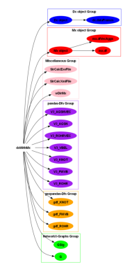

UML Diagram Creation
[1]:
#pip install pylint nbqa graphviz
[2]:
#conda install -c conda-forge graphviz
[3]:
#pip show pylint
[25]:
from PIL import Image
import os
import os
import subprocess
from IPython.display import Image
from graphviz import Digraph
from IPython.display import Image, display
try:
from PT3S import dxAndMxHelperFcts
except:
import dxAndMxHelperFcts
Class Diagram
[5]:
project_root = r'C:\Users\jablonski\3S\PT3S'
output_dir = r'C:\Users\jablonski\3S\PT3S\sphinx_docs\uml'
[6]:
modules = [
'Am.py', 'conf.py', 'Dx.py', 'dxAndMxHelperFcts.py', 'dxAecodeObjsAata.py',
'Lx.py', 'Mx.py', 'ncd.py', 'NFA.py', 'pNFA.py', 'Rm.py', 'sdfCsv.py', 'setup.py',
'Xm.py', 'lds/rpts.py', 'lds/__init__.py', 'UTILS/Ab.py', 'UTILS/Xml.py', 'UTILS/__init__.py'
]
modules = [
'Dx.py', 'dxAndMxHelperFcts.py', 'Mx.py'
]
[7]:
# Change to the directory containing your project
os.chdir(r'C:\Users\jablonski\3S\PT3S\sphinx_docs\uml')
[8]:
#!python "C:\Users\jablonski\AppAata\Local\anaconda3\Scripts\pyreverse-script.py" -o html -p PT3S .
[9]:
for module in modules:
module_path = os.path.join(project_root, module)
output_prefix = os.path.splitext(os.path.basename(module))[0]
# Run pyreverse command
command = [
'pyreverse', '-o', 'png', '-p', output_prefix, '-d', output_dir, module_path
]
subprocess.run(command, check=True)
[10]:
from PIL import Image
def crop_image(image_path, x_percent):
# Open an image file
with Image.open(image_path) as img:
# Calculate the cropping box
width, height = img.size
new_width = width - int(width * (x_percent / 100))
box = (0, 0, new_width, height)
# Crop the image
cropped_img = img.crop(box)
# Save the cropped image with '_cropped' suffix
base, ext = os.path.splitext(image_path)
cropped_image_path = f"{base}_cropped{ext}"
cropped_img.save(cropped_image_path)
return cropped_image_path
[11]:
image_path = r'C:\\Users\\jablonski\\3S\\PT3S\\sphinx_docs\\uml\\classes_dxAndMxHelperFcts.png'
[12]:
x_percent = 72 # Percentage to crop from the right
[13]:
cropped_image_path = crop_image(image_path, x_percent)
print(f"Cropped image saved at: {cropped_image_path}")
Cropped image saved at: C:\\Users\\jablonski\\3S\\PT3S\\sphinx_docs\\uml\\classes_dxAndMxHelperFcts_cropped.png
Diagram 2
[14]:
dot = Digraph()
# Main node in its own cluster
with dot.subgraph(name='cluster_root') as c:
c.attr(label='', color='white', fontsize='14', fontname='Arial Bold')
c.node('A', 'dxWithMx', color='white', style='filled', fontsize='14', fontname='Arial Bold')
# Dx object and its attributes
dot.node('B', 'Dx object', color='blue', style='filled', fontsize='14', fontname='Arial Bold')
dot.edge('A', 'B')
with dot.subgraph(name='cluster_0') as c:
c.attr(label='Dx object Group', color='blue', fontsize='14', fontname='Arial Bold')
c.node('B1', 'dx.dataFrames', color='blue', style='filled', fontsize='14', fontname='Arial Bold')
c.edge('B', 'B1')
# Mx object and its attributes
dot.node('C', 'Mx object', color='red', style='filled', fontsize='14', fontname='Arial Bold')
dot.edge('A', 'C')
with dot.subgraph(name='cluster_1') as c:
c.attr(label='Mx object Group', color='red', fontsize='14', fontname='Arial Bold')
c.node('C1', 'mx.df', color='red', style='filled', fontsize='14', fontname='Arial Bold')
c.node('C2', 'mx.dfVecAggs', color='red', style='filled', fontsize='14', fontname='Arial Bold')
c.edge('C', 'C1')
c.edge('C', 'C2')
# Miscellaneous attributes
with dot.subgraph(name='cluster_2') as c:
c.attr(label='Miscellaneous Group', color='pink', fontsize='14', fontname='Arial Bold')
c.node('A13', 'wDirMx', color='pink', style='filled', fontsize='14', fontname='Arial Bold')
c.node('A14', 'SirCalcXmlFile', color='pink', style='filled', fontsize='14', fontname='Arial Bold')
c.node('A15', 'SirCalcExeFile', color='pink', style='filled', fontsize='14', fontname='Arial Bold')
c.edge('A', 'A13')
c.edge('A', 'A14')
c.edge('A', 'A15')
# pandas-Dfs with Model AND Result Data
with dot.subgraph(name='cluster_3') as c:
c.attr(label='pandas-Dfs Group', color='purple', fontsize='14', fontname='Arial Bold')
c.node('A1', 'V3_ROHR', color='purple', style='filled', fontsize='14', fontname='Arial Bold')
c.node('A2', 'V3_FWVB', color='purple', style='filled', fontsize='14', fontname='Arial Bold')
c.node('A3', 'V3_KNOT', color='purple', style='filled', fontsize='14', fontname='Arial Bold')
c.node('A4', 'V3_VBEL', color='purple', style='filled', fontsize='14', fontname='Arial Bold')
c.node('A5', 'V3_ROHRVEC', color='purple', style='filled', fontsize='14', fontname='Arial Bold')
c.node('A6', 'V3_AGSN', color='purple', style='filled', fontsize='14', fontname='Arial Bold')
c.node('A7', 'V3_AGSNVEC', color='purple', style='filled', fontsize='14', fontname='Arial Bold')
c.edge('A', 'A1')
c.edge('A', 'A2')
c.edge('A', 'A3')
c.edge('A', 'A4')
c.edge('A', 'A5')
c.edge('A', 'A6')
c.edge('A', 'A7')
# geopandas-Dfs
with dot.subgraph(name='cluster_4') as c:
c.attr(label='geopandas-Dfs Group', color='orange', fontsize='14', fontname='Arial Bold')
c.node('A8', 'gdf_ROHR', color='orange', style='filled', fontsize='14', fontname='Arial Bold')
c.node('A9', 'gdf_FWVB', color='orange', style='filled', fontsize='14', fontname='Arial Bold')
c.node('A10', 'gdf_KNOT', color='orange', style='filled', fontsize='14', fontname='Arial Bold')
c.edge('A', 'A8')
c.edge('A', 'A9')
c.edge('A', 'A10')
# NetworkX-Graphs
with dot.subgraph(name='cluster_5') as c:
c.attr(label='NetworkX-Graphs Group', color='lime', fontsize='14', fontname='Arial Bold')
c.node('A11', 'G', color='lime', style='filled', fontsize='14', fontname='Arial Bold')
c.node('A12', 'GSig', color='lime', style='filled', fontsize='14', fontname='Arial Bold')
c.edge('A', 'A11')
c.edge('A', 'A12')
# Set the direction of the graph layout to left-to-right
dot.attr(rankdir='LR')
# Save the diagram to the specified path
dot.render('dxWithMx_diagram', format='png')
[14]:
'dxWithMx_diagram.png'
[15]:
import matplotlib.pyplot as plt
import matplotlib.image as mpimg
img = mpimg.imread('dxWithMx_diagram.png')
imgplot = plt.imshow(img)
plt.axis('off') # Hide axes
plt.show()

[ ]:
[16]:
from PIL import Image
# Open the images
image1 = Image.open('classes_dxAndMxHelperFcts_cropped.png')
image2 = Image.open('dxWithMx_diagram.png')
# Resize images to have the same height
height = max(image1.height, image2.height)
image1 = image1.resize((int(image1.width * height / image1.height), height))
image2 = image2.resize((int(image2.width * height / image2.height), height))
# Create a new image with the combined width of both images
combined_width = image1.width + image2.width
new_image = Image.new('RGB', (combined_width, height))
# Paste the images side by side
new_image.paste(image1, (0, 0))
new_image.paste(image2, (image1.width, 0))
# Save the new image
new_image.save('combined_image.png')
# Display the new image
new_image.show()
Diagram 3
[18]:
from graphviz import Digraph
dot = Digraph()
# Main node in its own cluster
with dot.subgraph(name='cluster_root') as c:
c.attr(label='', color='white', fontsize='14', fontname='Arial Bold')
c.node('A', 'dxWithMx', color='white', style='filled', fontsize='14', fontname='Arial Bold')
# Dx object and its attributes
dot.node('B', 'Dx object', color='blue', style='filled', fontsize='14', fontname='Arial Bold')
dot.edge('A', 'B')
with dot.subgraph(name='cluster_0') as c:
c.attr(label='Dx object Group', color='blue', fontsize='14', fontname='Arial Bold')
c.node('B1', 'dx.dataFrames', color='blue', style='filled', fontsize='14', fontname='Arial Bold')
c.edge('B', 'B1')
# Mx object and its attributes
dot.node('C', 'Mx object', color='red', style='filled', fontsize='14', fontname='Arial Bold')
dot.edge('A', 'C')
with dot.subgraph(name='cluster_1') as c:
c.attr(label='Mx object Group', color='red', fontsize='14', fontname='Arial Bold')
c.node('C1', 'mx.df', color='red', style='filled', fontsize='14', fontname='Arial Bold')
c.node('C2', 'mx.dfVecAggs', color='red', style='filled', fontsize='14', fontname='Arial Bold')
c.edge('C', 'C1')
c.edge('C', 'C2')
# Miscellaneous attributes
with dot.subgraph(name='cluster_2') as c:
c.attr(label='Miscellaneous Group', color='pink', fontsize='14', fontname='Arial Bold')
c.node('A13', 'wDirMx', color='pink', style='filled', fontsize='14', fontname='Arial Bold')
c.node('A14', 'SirCalcXmlFile', color='pink', style='filled', fontsize='14', fontname='Arial Bold')
c.node('A15', 'SirCalcExeFile', color='pink', style='filled', fontsize='14', fontname='Arial Bold')
c.edge('A', 'A13')
c.edge('A', 'A14')
c.edge('A', 'A15')
# pandas-Dfs with Model AND Result Data
with dot.subgraph(name='cluster_3') as c:
c.attr(label='pandas-Dfs Group', color='purple', fontsize='14', fontname='Arial Bold')
c.node('A1', 'V3_ROHR', color='purple', style='filled', fontsize='14', fontname='Arial Bold')
c.node('A2', 'V3_FWVB', color='purple', style='filled', fontsize='14', fontname='Arial Bold')
c.node('A3', 'V3_KNOT', color='purple', style='filled', fontsize='14', fontname='Arial Bold')
c.node('A4', 'V3_VBEL', color='purple', style='filled', fontsize='14', fontname='Arial Bold')
c.node('A5', 'V3_ROHRVEC', color='purple', style='filled', fontsize='14', fontname='Arial Bold')
c.node('A6', 'V3_AGSN', color='purple', style='filled', fontsize='14', fontname='Arial Bold')
c.node('A7', 'V3_AGSNVEC', color='purple', style='filled', fontsize='14', fontname='Arial Bold')
c.edge('A', 'A1')
c.edge('A', 'A2')
c.edge('A', 'A3')
c.edge('A', 'A4')
c.edge('A', 'A5')
c.edge('A', 'A6')
c.edge('A', 'A7')
# Adding child nodes for V3_ROHR
c.node('A1_1', 'PH_i,_k', color='purple', style='filled', fontsize='14', fontname='Arial Bold')
c.node('A1_2', 'H_i,_k', color='purple', style='filled', fontsize='14', fontname='Arial Bold')
c.node('A1_3', 'mlc_i,_k', color='purple', style='filled', fontsize='14', fontname='Arial Bold')
c.node('A1_4', 'RHO_i,_k', color='purple', style='filled', fontsize='14', fontname='Arial Bold')
c.node('A1_5', 'T_i,_k', color='purple', style='filled', fontsize='14', fontname='Arial Bold')
c.node('A1_6', 'QM', color='purple', style='filled', fontsize='14', fontname='Arial Bold')
c.edge('A1', 'A1_1')
c.edge('A1', 'A1_2')
c.edge('A1', 'A1_3')
c.edge('A1', 'A1_4')
c.edge('A1', 'A1_5')
c.edge('A1', 'A1_6')
# Adding child nodes for V3_KNOT
c.node('A3_1', 'PH', color='purple', style='filled', fontsize='14', fontname='Arial Bold')
c.node('A3_2', 'dPH', color='purple', style='filled', fontsize='14', fontname='Arial Bold')
c.node('A3_3', 'QM', color='purple', style='filled', fontsize='14', fontname='Arial Bold')
c.node('A3_4', 'srcvector', color='purple', style='filled', fontsize='14', fontname='Arial Bold')
c.edge('A3', 'A3_1')
c.edge('A3', 'A3_2')
c.edge('A3', 'A3_3')
c.edge('A3', 'A3_4')
# Adding child nodes for V3_VBEL
c.node('A4_1', 'PH_i,_k', color='purple', style='filled', fontsize='14', fontname='Arial Bold')
c.node('A4_2', 'H_i,_k', color='purple', style='filled', fontsize='14', fontname='Arial Bold')
c.node('A4_3', 'mlc_i,_k', color='purple', style='filled', fontsize='14', fontname='Arial Bold')
c.node('A4_4', 'RHO_i,_k', color='purple', style='filled', fontsize='14', fontname='Arial Bold')
c.node('A4_5', 'T_i,_k', color='purple', style='filled', fontsize='14', fontname='Arial Bold')
c.node('A4_6', 'QM', color='purple', style='filled', fontsize='14', fontname='Arial Bold')
c.edge('A4', 'A4_1')
c.edge('A4', 'A4_2')
c.edge('A4', 'A4_3')
c.edge('A4', 'A4_4')
c.edge('A4', 'A4_5')
c.edge('A4', 'A4_6')
# geopandas-Dfs
with dot.subgraph(name='cluster_4') as c:
c.attr(label='geopandas-Dfs Group', color='orange', fontsize='14', fontname='Arial Bold')
c.node('A8', 'gdf_ROHR', color='orange', style='filled', fontsize='14', fontname='Arial Bold')
c.node('A9', 'gdf_FWVB', color='orange', style='filled', fontsize='14', fontname='Arial Bold')
c.node('A10', 'gdf_KNOT', color='orange', style='filled', fontsize='14', fontname='Arial Bold')
c.edge('A', 'A8')
c.edge('A', 'A9')
c.edge('A', 'A10')
# NetworkX-Graphs
with dot.subgraph(name='cluster_5') as c:
c.attr(label='NetworkX-Graphs Group', color='lime', fontsize='14', fontname='Arial Bold')
c.node('A11', 'G', color='lime', style='filled', fontsize='14', fontname='Arial Bold')
c.node('A12', 'GSig', color='lime', style='filled', fontsize='14', fontname='Arial Bold')
c.edge('A', 'A11')
c.edge('A', 'A12')
# Set the direction of the graph layout to left-to-right
dot.attr(rankdir='LR')
# Save the diagram to the specified path
dot.render('dxWithMx_diagram2', format='png')
[18]:
'dxWithMx_diagram2.png'
[20]:
import matplotlib.pyplot as plt
import matplotlib.image as mpimg
img = mpimg.imread('dxWithMx_diagram2.png')
imgplot = plt.imshow(img)
plt.axis('off') # Hide axes
plt.show()
Diagram 4
[21]:
pip install plotly
Requirement already satisfied: plotly in c:\users\jablonski\appdata\local\anaconda3\lib\site-packages (5.24.1)
Requirement already satisfied: tenacity>=6.2.0 in c:\users\jablonski\appdata\local\anaconda3\lib\site-packages (from plotly) (9.0.0)
Requirement already satisfied: packaging in c:\users\jablonski\appdata\local\anaconda3\lib\site-packages (from plotly) (23.1)
Note: you may need to restart the kernel to use updated packages.
[89]:
import plotly.graph_objects as go
fig = go.Figure()
# Main node
fig.add_trace(go.Scatter(x=[0], y=[0], mode='markers+text', text=['dxWithMx'], textposition='bottom center', marker=dict(size=20, color='white'), name='Main Node'))
# Dx object and its attributes
fig.add_trace(go.Scatter(x=[1], y=[1], mode='markers+text', text=['Dx object'], textposition='bottom center', marker=dict(size=20, color='blue'), name='Dx object'))
fig.add_trace(go.Scatter(x=[2], y=[2], mode='markers+text', text=['dx.dataFrames'], textposition='bottom center', marker=dict(size=20, color='blue'), name='dx.dataFrames'))
# Mx object and its attributes
fig.add_trace(go.Scatter(x=[1], y=[-1], mode='markers+text', text=['Mx object'], textposition='bottom center', marker=dict(size=20, color='red'), name='Mx object'))
fig.add_trace(go.Scatter(x=[2], y=[-2], mode='markers+text', text=['mx.df'], textposition='bottom center', marker=dict(size=20, color='red'), name='mx.df'))
fig.add_trace(go.Scatter(x=[2], y=[-3], mode='markers+text', text=['mx.dfVecAggs'], textposition='bottom center', marker=dict(size=20, color='red'), name='mx.dfVecAggs'))
# Miscellaneous attributes
fig.add_trace(go.Scatter(x=[1], y=[3], mode='markers+text', text=['wDirMx'], textposition='bottom center', marker=dict(size=20, color='pink'), name='wDirMx'))
fig.add_trace(go.Scatter(x=[1], y=[4], mode='markers+text', text=['SirCalcXmlFile'], textposition='bottom center', marker=dict(size=20, color='pink'), name='SirCalcXmlFile'))
fig.add_trace(go.Scatter(x=[1], y=[5], mode='markers+text', text=['SirCalcExeFile'], textposition='bottom center', marker=dict(size=20, color='pink'), name='SirCalcExeFile'))
# pandas-Dfs with Model AND Result Data
fig.add_trace(go.Scatter(x=[1], y=[6], mode='markers+text', text=['V3_ROHR'], textposition='bottom center', marker=dict(size=20, color='purple'), name='V3_ROHR'))
fig.add_trace(go.Scatter(x=[1], y=[7], mode='markers+text', text=['V3_FWVB'], textposition='bottom center', marker=dict(size=20, color='purple'), name='V3_FWVB'))
fig.add_trace(go.Scatter(x=[1], y=[8], mode='markers+text', text=['V3_KNOT'], textposition='bottom center', marker=dict(size=20, color='purple'), name='V3_KNOT'))
fig.add_trace(go.Scatter(x=[1], y=[9], mode='markers+text', text=['V3_VBEL'], textposition='bottom center', marker=dict(size=20, color='purple'), name='V3_VBEL'))
fig.add_trace(go.Scatter(x=[1], y=[10], mode='markers+text', text=['V3_ROHRVEC'], textposition='bottom center', marker=dict(size=20, color='purple'), name='V3_ROHRVEC'))
fig.add_trace(go.Scatter(x=[1], y=[11], mode='markers+text', text=['V3_AGSN'], textposition='bottom center', marker=dict(size=20, color='purple'), name='V3_AGSN'))
fig.add_trace(go.Scatter(x=[1], y=[12], mode='markers+text', text=['V3_AGSNVEC'], textposition='bottom center', marker=dict(size=20, color='purple'), name='V3_AGSNVEC'))
# geopandas-Dfs
fig.add_trace(go.Scatter(x=[1], y=[13], mode='markers+text', text=['gdf_ROHR'], textposition='bottom center', marker=dict(size=20, color='orange'), name='gdf_ROHR'))
fig.add_trace(go.Scatter(x=[1], y=[14], mode='markers+text', text=['gdf_FWVB'], textposition='bottom center', marker=dict(size=20, color='orange'), name='gdf_FWVB'))
fig.add_trace(go.Scatter(x=[1], y=[15], mode='markers+text', text=['gdf_KNOT'], textposition='bottom center', marker=dict(size=20, color='orange'), name='gdf_KNOT'))
# NetworkX-Graphs
fig.add_trace(go.Scatter(x=[1], y=[16], mode='markers+text', text=['G'], textposition='bottom center', marker=dict(size=20, color='lime'), name='G'))
fig.add_trace(go.Scatter(x=[1], y=[17], mode='markers+text', text=['GSig'], textposition='bottom center', marker=dict(size=20, color='lime'), name='GSig'))
# Branches
for i in range(1, 18):
fig.add_shape(type='line', x0=0, y0=0, x1=1, y1=i, line=dict(color='black', width=2))
# Add edges between dxWithMx and mx
fig.add_shape(type='line', x0=0, y0=0, x1=1, y1=-1, line=dict(color='black', width=2))
# Add edges between Dx object and its children
fig.add_shape(type='line', x0=1, y0=1, x1=2, y1=2, line=dict(color='blue', width=2))
# Add edges between Mx object and its children
fig.add_shape(type='line', x0=1, y0=-1, x1=2, y1=-2, line=dict(color='red', width=2))
fig.add_shape(type='line', x0=1, y0=-1, x1=2, y1=-3, line=dict(color='red', width=2))
# Connect Dx object with its child attributes
fig.add_shape(type='line', x0=1, y0=1, x1=2, y1=2, line=dict(color='blue', width=2))
# Connect Mx object with its child attributes
fig.add_shape(type='line', x0=1, y0=-1, x1=2, y1=-2, line=dict(color='red', width=2))
fig.add_shape(type='line', x0=1, y0=-1, x1=2, y1=-3, line=dict(color='red', width=2))
# Set layout
fig.update_layout(
title=None,
xaxis=dict(showgrid=False, zeroline=False, visible=False),
yaxis=dict(showgrid=False, zeroline=False, visible=False),
showlegend=False,
autosize=False,
width=800,
height=1200,
)
fig.write_html('interactive_diagram.html')
# Display the figure
fig.show()
Diagram 5
[26]:
dbFilename="Example1"
dbFile=os.path.join(os.path.dirname(os.path.abspath(dxAndMxHelperFcts.__file__))
+'/Examples/'
+dbFilename
+'.db3'
)
[72]:
m=dxAndMxHelperFcts.readDxAndMx(dbFile=dbFile
,preventPklDump=True
)
[61]:
import pandas as pd
import networkx as nx
import plotly.graph_objects as go
def get_attributes(obj, depth=1, current_depth=0, parent_name='', filter_list=None):
"""
Recursively get attributes of an object and its children up to a specified depth.
If an attribute is a DataFrame, get its columns instead of its child attributes.
Apply a filter to include only specified attributes without their child attributes.
Parameters:
obj (object): The object to inspect.
depth (int): The maximum depth to inspect.
current_depth (int): The current depth of inspection.
parent_name (str): The name of the parent attribute.
filter_list (list): A list of attribute names to include without their child attributes.
Returns:
dict: A dictionary containing the attributes and their values.
"""
if current_depth > depth:
return {}
if filter_list is None:
filter_list = []
attributes = {}
for attr_name in dir(obj):
if not attr_name.startswith('__'):
try:
attr_value = getattr(obj, attr_name)
full_attr_name = f"{parent_name}.{attr_name}" if parent_name else attr_name
if isinstance(attr_value, pd.DataFrame):
# If the attribute is a DataFrame, get its columns
attributes[full_attr_name] = list(attr_value.columns)
elif not callable(attr_value):
attributes[full_attr_name] = None # Only store the attribute name
# Recursively get child attributes unless the attribute is in the filter list
if attr_name not in filter_list:
child_attributes = get_attributes(attr_value, depth, current_depth + 1, full_attr_name, filter_list)
attributes.update(child_attributes)
except Exception as e:
print(f"Could not access attribute {attr_name}: {e}")
return attributes
def create_graph(attributes, root):
"""
Create a graph with direct child attributes connected to their parent.
Parameters:
attributes (dict): A dictionary containing the attributes and their values.
root (str): The name of the root node.
Returns:
networkx.DiGraph: A directed graph with attributes as nodes and connections as edges.
"""
G = nx.DiGraph()
for attr in attributes.keys():
parts = attr.split('.')
for i in range(1, len(parts)):
parent = '.'.join(parts[:i])
child = '.'.join(parts[:i+1])
G.add_edge(parent, child)
# Add root node and connect it to top-level attributes
for attr in set(attr.split('.')[0] for attr in attributes.keys()):
G.add_edge(root, attr)
return G
def plot_interactive_graph(G):
"""
Plot an interactive Plotly graph from a NetworkX graph.
Parameters:
G (networkx.DiGraph): A directed graph with attributes as nodes and connections as edges.
"""
pos = nx.spring_layout(G)
edge_x = []
edge_y = []
for edge in G.edges():
x0, y0 = pos[edge[0]]
x1, y1 = pos[edge[1]]
edge_x.append(x0)
edge_x.append(x1)
edge_x.append(None)
edge_y.append(y0)
edge_y.append(y1)
edge_y.append(None)
edge_trace = go.Scatter(
x=edge_x, y=edge_y,
line=dict(width=2, color='#888'),
hoverinfo='none',
mode='lines')
node_x = []
node_y = []
node_text = []
for node in G.nodes():
x, y = pos[node]
node_x.append(x)
node_y.append(y)
node_text.append(node)
node_trace = go.Scatter(
x=node_x, y=node_y,
mode='markers+text',
text=node_text,
textposition='bottom center',
hoverinfo='text',
marker=dict(
showscale=True,
colorscale='YlGnBu',
size=10,
colorbar=dict(
thickness=15,
title='Node Connections',
xanchor='left',
titleside='right'
),
line_width=2))
fig = go.Figure(data=[edge_trace, node_trace],
layout=go.Layout(
title='Interactive Attribute Graph',
titlefont_size=16,
showlegend=False,
hovermode='closest',
margin=dict(b=20,l=5,r=5,t=40),
annotations=[dict(
text="",
showarrow=False,
xref="paper", yref="paper"
)],
xaxis=dict(showgrid=False, zeroline=False),
yaxis=dict(showgrid=False, zeroline=False))
)
fig.show()
filter_list = ['mx']
attributes = get_attributes(m, depth=2, filter_list=filter_list)
G = create_graph(attributes, root='dxWithMx')
# Plot the interactive graph
plot_interactive_graph(G)
Diagram 6
[ ]: